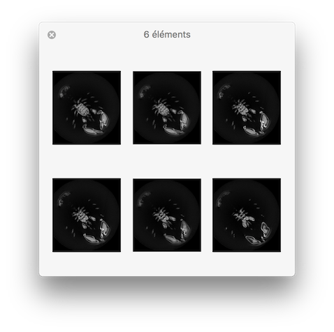

Convert a volumetric file (.vol, .longvol, .pgm3d) into a set of 2D slice images.
Usage: vol2slice [input] [output]
Allowed options are:
Typical use: to extract all slices defined in Y plane (y=cst):
vol2slice -i image3d.vol -s 1 -o slice.pgm
Usage: ./converters/vol2slice [OPTIONS] 1 [2]
Positionals:
1 TEXT:FILE REQUIRED vol file (.vol, .longvol .p3d, .pgm3d and if WITH_ITK is selected: dicom, dcm, mha, mhd). For longvol, dicom, dcm, mha or mhd formats, the input values are linearly scaled between 0 and 255.
2 TEXT=result.pgm base_name.extension: extracted 2D slice volumetric files (will result n files base_name_xxx.extension)
Options:
-h,--help Print this help message and exit
-i,--input TEXT:FILE REQUIRED vol file (.vol, .longvol .p3d, .pgm3d and if WITH_ITK is selected: dicom, dcm, mha, mhd). For longvol, dicom, dcm, mha or mhd formats, the input values are linearly scaled between 0 and 255.
-o,--output TEXT=result.pgm base_name.extension: extracted 2D slice volumetric files (will result n files base_name_xxx.extension)
-f,--setFirstSlice INT:NUMBER=0 Set the first slice index to be extracted.
-l,--setLastSlice INT:NUMBER Set the last slice index to be extracted (by default set to maximal value according to the given volume).
-s,--sliceOrientation UINT:{0,1,2}=2 specify the slice orientation for which the slice are defined (by default =2 (Z direction))
--rescaleInputMin INT=0 min value used to rescale the input intensity (to avoid basic cast into 8 bits image).
--rescaleInputMax INT=255 max value used to rescale the input intensity (to avoid basic cast into 8 bits image).
Example:
# Export Z slice images (-s 2):
$ vol2slice ${DGtal}/examples/samples/lobster.vol slice.pgm -f 10 -l 15 -s 2
You should obtain such a visualization:

resulting visualisation.
- See also
- vol2slice.cpp